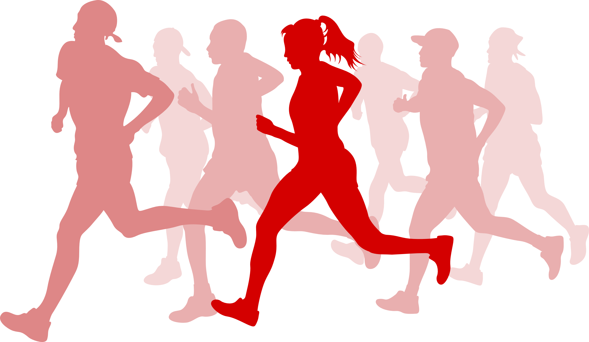

| WHEN | Sunday, the 27th of September 2026 |
|---|---|
| WHAT |
Trail run, 100% forest trails - no asphalt long distance: 7 miles (= 11,265 km) with about 340 m elevation short distance: 4 miles (= 6,437 km) with about 130 m elevation walking/nordic walking: only possible on the 4-mile course |
| WHERE |
Kaiserslautern Race number pick-up and late registration: club house of the TSG Kaiserslautern Start / finish: forest entrance opposite the restaurant Sommerhaus |
| STARTING TIME |
7M: 10 am (runners) 4M: 10:25 am (runners and walkers) |
| DRINK STATIONS | on the 7-mile course at km 6 / at the finish line |
| RACE FEE | 12 EUR (7M-Trail) / 6 EUR (4M-Trail) |
| REGISTRATION | online on RaceResult |
| DEREGISTRATION | Deregistration is not possible. However, you can arrange to be replaced by another runner. Just send us the data of this person and we will make the relevant changes on the registration platform. |
| LATE REGISTRATION | on the race day, between 8.30 am and 9.45 am, + 1 EUR |
| RACE NUMBER PICK UP | on the race day, between 8.30 am and 9.45 am |
| CATEGORIES |
7M: 5 year categories following DLO rules + MU20/WU20 4M: M/W 4M walkers: M/W |
| AWARD CEREMONY | about 30 minutes after the last runners have reached the finish line |
| PRIZES |
for the 1st 3 men and 1st 3 women (7 miles & 4 miles), for the 1st 3 competitors in each category (7 miles only) for the first men and for the 1st woman (4 miles for walkers) for runners establishing a new race record on the 7M course or on the 4M course for the team with the largest number of participants |
| RESULTS | will be printed and displayed after the race / will be available online |
| SHOWERS | in the sport facilities of the TSG Kaiserslautern |
| COFFEE and CAKE | savoury snacks, cake and beverages will be available for purchase in the club house of the TSG Kaiserslautern |
| COURSE MAP | here |
| AND? | A report by Tom Heuer on the 7-mile trail run 2022 |
By registering for the 7-Meilen-Trail, participants acknowledge and accept the event regulations, these Terms and Conditions of Participation, and the organiser's Disclaimer of Liability.
Participation is entirely at the participant's own risk. To the fullest extent permitted by law, the organiser accepts no liability for any personal injury, property damage or financial loss arising from participation in the event.
By registering, participants confirm that they are adequately trained and medically fit to take part in the event. Participants undertake to comply with all instructions issued by the organiser, the police, the emergency services and the course marshals. The medical team reserves the right to withdraw any participant from the race should there be signs of a health risk.
Furthermore, participants consent to the use of the personal information provided during registration for the purposes of organising and administering the event. They confirm that all information supplied is accurate and complete. Once registration has been completed, there is generally no entitlement to a refund of the entry fee.
Personal data collected as part of the registration process will be processed solely for the organisation and administration of the event. By registering, participants also agree that their personal data may be published in start and results lists. Furthermore, photographs and video recordings taken during the event may be used for reporting purposes and for the organiser's publicity and promotional activities.